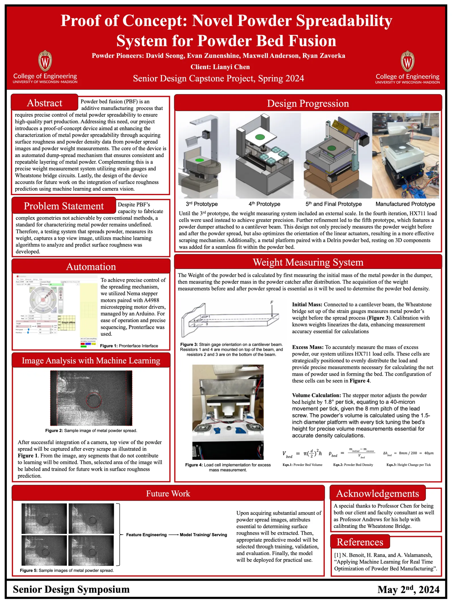
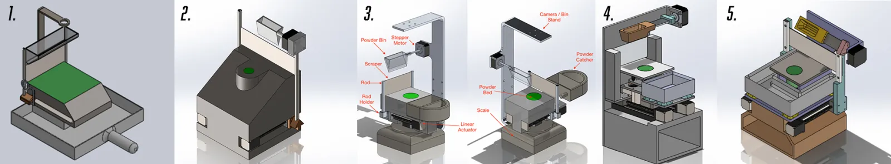
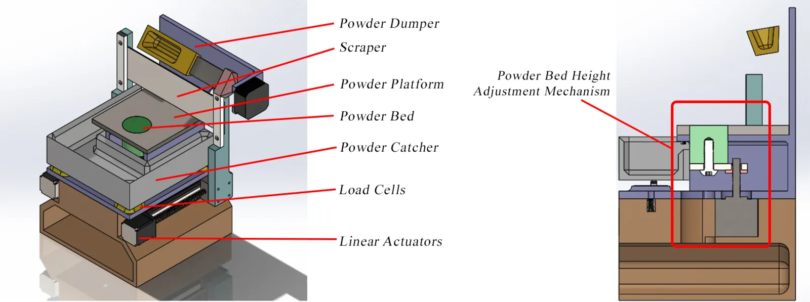
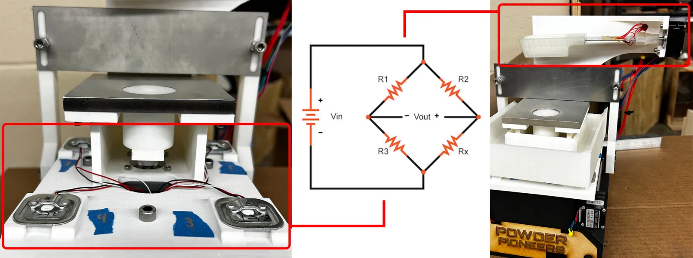
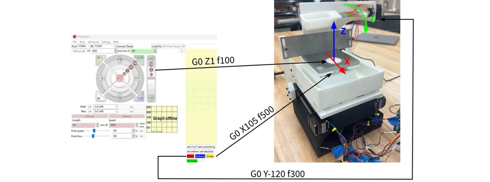
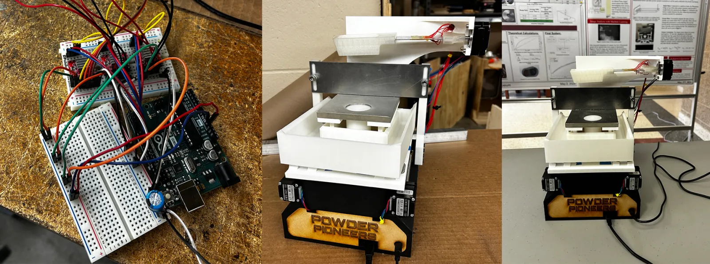
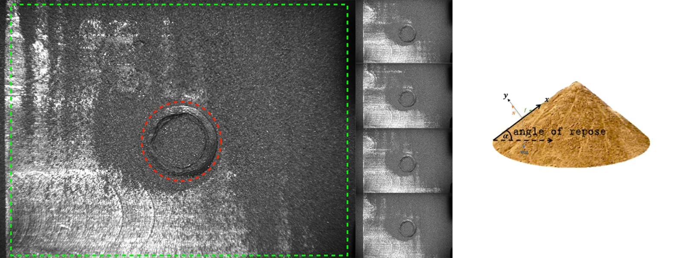
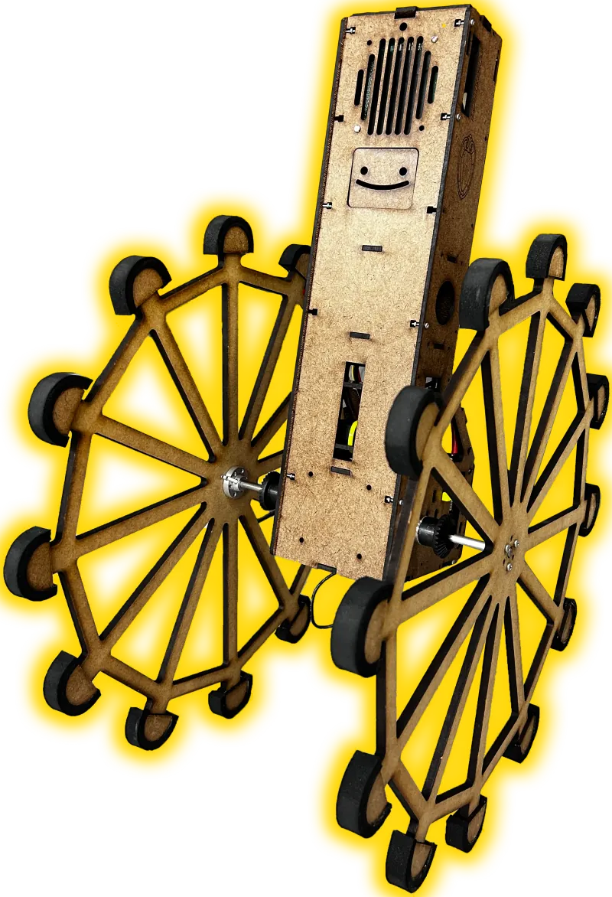

Overview
For my senior design project, I worked with Dr. Lianyi Chen and 3 other talented engineers to develop a 1' x 1' Powder Spreading and Powder Spread Evaluating device that spreads various metal powders and measures parameters essential to Powder Bed Fusion (PBF) such as Surface Roughness, Powder Denudation, Powderbed Density, Powder Scrape angle.


Design iterations
Due to the complexity of our task and our client's request for addtional functionalities, I went through 5 different designs for the device.
Powder height adjustment
Powder height adjustment mechanism was implemented to provide small (micrometer level) height changes between powder spreads. The mechanism uses a simple z-axis actuation enforced by constraining movement in the x-y axis (tight fit between powder bed and platform) and connecting the powder bed to a stepper motor.


Powder bed density
To claculate the powder bed density, the mass of the powder on the powder bed had to be obtained. Wheat bridge circuit was used with strain gauges before the dump (attached to aluminum beam) and after the dump (HX711 load cells) to effectively measure the change in powder mass to calculate powder density. The small changes in resistance were picked up and normalized using LabVIEW.
Automation with Pronterface
Realizing the spreader's mechanism is a 3-axis stepper motor system (if dumper's rotational axis is set as one of the linear axis), I decided to use Pronterface, a 3D printer automation software that enables stepper motor control with G-code. By linking each of the stepper motor actuation with Pronterface's axis, I was able to easily automate the spreading process, create macro for step by step execution.


Stepper motor drivers
Using A-4988 Stepper Motor Driver for each of the stepper motors, I was able to enforce microstepping resulting in smooth actuation of the motors. This enabled effective dumping, spreading, and bed height adjusting mechanisms.
Live demo
Live demo of our device - before completion.

Moving forward
Moving forward, supervised learning will need to be performed from powder spread images and respose angle images taken from the side to be able to determine the quality of metal powder spread using computer vision.
Similar work

Learning with Moldex
Collaborated with Dr. Jinsu Gim and Dr. Chung-Yin Lin on materials research for the manufacturing of thermoplastic composite structures.

ComputerVision Solution for Automated Power Plant Inspection
Robotics and AI solution automating power plant gauge inspections with object detection, image analysis, and OCR.

Torsobot
Self-balancing rimless wheel robot investigating fundamental properties of human walk cycle with enhanced stability using PID control.